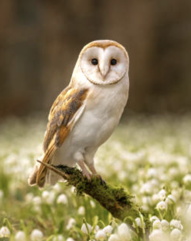

Project One
Describe a school project, hobby, portfolio piece, or goal you're proud of.
Personal Website
I'm building my corner of the internet. This page is a simple starting point for sharing who I am, what I'm learning, and what I'm excited about.
About Me
You can replace this text with a few sentences about yourself. Mention what you do, what you care about, or what kind of work and ideas you want this site to represent.
Projects
Describe a school project, hobby, portfolio piece, or goal you're proud of.
Use this space for another highlight, even if it's still in progress.
This can also be a future idea, not just something you've already finished.

Owls
This section now uses your owl image as the visual centerpiece. The colors and styling are tuned to feel gentle, dreamy, and nature-inspired, with a lavender background that still fits the warmth of the photo.
If you want, we can also add more owl details next, like a gallery, a quote, or a custom heading that feels more like your personal style.
Contact
Add your email, social links, or anything else you'd like visitors to use to get in touch.